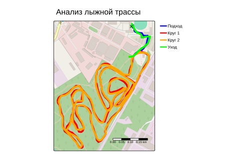

track_points <- st_read("../../../data/2022-01-09_14-00_Sun.gpx", layer = "track_points", quiet = TRUE) %>%
st_transform(32637) %>%
select(time, geometry)
# Точки
base_point <- track_points[1, ]
entry_point <- track_points[100, ]
# Расчеты до разделения на участки
track_analyzed <- track_points %>%
mutate(
dist_to_base = as.numeric(st_distance(geometry, base_point)),
dist_to_entry = as.numeric(st_distance(geometry, entry_point)),
dist_step = as.numeric(st_distance(geometry, lag(geometry), by_element = TRUE)),
dt = as.numeric(difftime(time, lag(time), units = "secs")),
speed = (dist_step / dt) * 3.6,
index = row_number()
)
# 4. Точка входа на второй круг
idx_split <- which(track_analyzed$dist_to_entry < 50 &
track_analyzed$index > 300 &
track_analyzed$index < 600)[1]
idx_exit <- nrow(track_analyzed) - 130
# Определяем участки трассы
p1 <- track_analyzed[1:100, ] %>% mutate(Участок = "Подход к трассе")
p2 <- track_analyzed[100:idx_split, ] %>% mutate(Участок = "Круг 1")
p3 <- track_analyzed[idx_split:idx_exit, ] %>% mutate(Участок = "Круг 2")
p4 <- track_analyzed[idx_exit:nrow(track_analyzed), ] %>% mutate(Участок = "Уход с трассы")
track <- bind_rows(p1, p2, p3, p4) %>%
filter(!is.na(dist_step))# Таблица с результатами
stats <- track %>%
st_drop_geometry() %>%
group_by(Участок) %>%
summarise(
Длина_км = round(sum(dist_step, na.rm = TRUE) / 1000, 2),
Начало = min(time),
Конец = max(time),
Время_сек = as.numeric(difftime(Конец, Начало, units = "secs")),
Ср_скорость = round((sum(dist_step, na.rm = TRUE) / Время_сек) * 3.6, 1),
Неравномерность = round(sd(speed, na.rm = TRUE) / mean(speed, na.rm = TRUE), 2)
) %>%
arrange(Начало)
knitr::kable(stats, caption = "Результаты расчётов")| Участок | Длина_км | Начало | Конец | Время_сек | Ср_скорость | Неравномерность |
|---|---|---|---|---|---|---|
| Подход к трассе | 0.32 | 2022-01-09 14:00:23 | 2022-01-09 14:09:30 | 547 | 2.1 | 1.16 |
| Круг 1 | 4.45 | 2022-01-09 14:09:30 | 2022-01-09 14:36:03 | 1593 | 10.1 | 0.28 |
| Круг 2 | 4.61 | 2022-01-09 14:36:03 | 2022-01-09 15:04:04 | 1681 | 9.9 | 0.34 |
| Уход с трассы | 0.38 | 2022-01-09 15:04:04 | 2022-01-09 15:16:08 | 724 | 1.9 | 1.11 |
max_dist <- max(track_analyzed$dist_to_base, na.rm = TRUE)
cat("Максимальное удаление от базы:", round(max_dist, 0), "метров")Максимальное удаление от базы: 764 метров# Рисуем
tmap_mode("plot")
full_extent <- st_bbox(track_points)
l1 <- track %>% filter(Участок == "Подход к трассе") %>% summarise(do_union=F) %>% st_cast("LINESTRING")
l2 <- track %>% filter(Участок == "Круг 1") %>% summarise(do_union=F) %>% st_cast("LINESTRING")
l3 <- track %>% filter(Участок == "Круг 2") %>% summarise(do_union=F) %>% st_cast("LINESTRING")
l4 <- track %>% filter(Участок == "Уход с трассы") %>% summarise(do_union=F) %>% st_cast("LINESTRING")
# тут для подложки нужен интернет
maphw <- tm_basemap("OpenStreetMap") +
tm_shape(l1, bbox = full_extent) + tm_lines(col = "blue", lwd = 5) +
tm_shape(l2) + tm_lines(col = "red", lwd = 5) +
tm_shape(l3) + tm_lines(col = "orange", lwd = 5) +
tm_shape(l4) + tm_lines(col = "green", lwd = 5) +
tm_shape(base_point) + tm_symbols(col = "black", shape = 4, size = 0.5) +
tm_add_legend(type = "line",
labels = c("Подход", "Круг 1", "Круг 2", "Уход"),
col = c("blue", "red", "orange", "green"), lwd = 3, title = "") +
tm_layout(main.title = "Анализ лыжной трассы",
legend.outside = TRUE, legend.frame = TRUE, frame = TRUE) +
tm_scalebar(position = c("right", "bottom"), bg.color = "white", bg.alpha = 0.5)
maphw